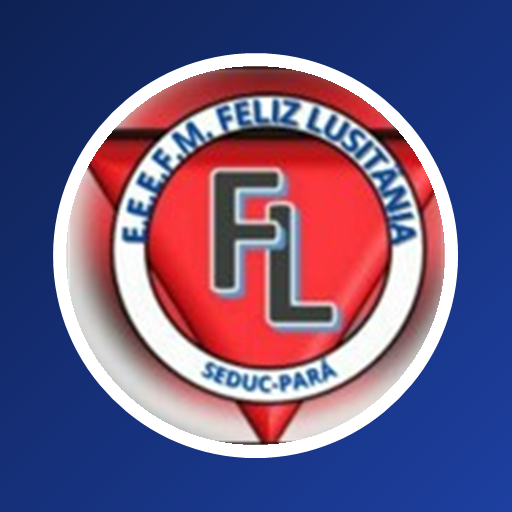

0 de 20

Escola Estadual “Feliz Lusitânia”
Diretora: Carla Nilce
Professor: Amauri Junior
72bpm
98% O₂
3ª Avaliação de C.F.B.
Sistema cardiovascular
Valor10,0 pontos
Nota—
Sala
Antes de começar
- A prova tem 20 questões. Cada uma vale 0,5 ponto.
- Nas questões de múltipla escolha, toque na alternativa correta.
- Algumas questões são interativas: você vai tocar, arrastar, ligar, ordenar ou completar. Nelas, cada parte certa vale uma parte da nota.
- Revise tudo antes de entregar. Depois da entrega, as respostas não podem ser mudadas.